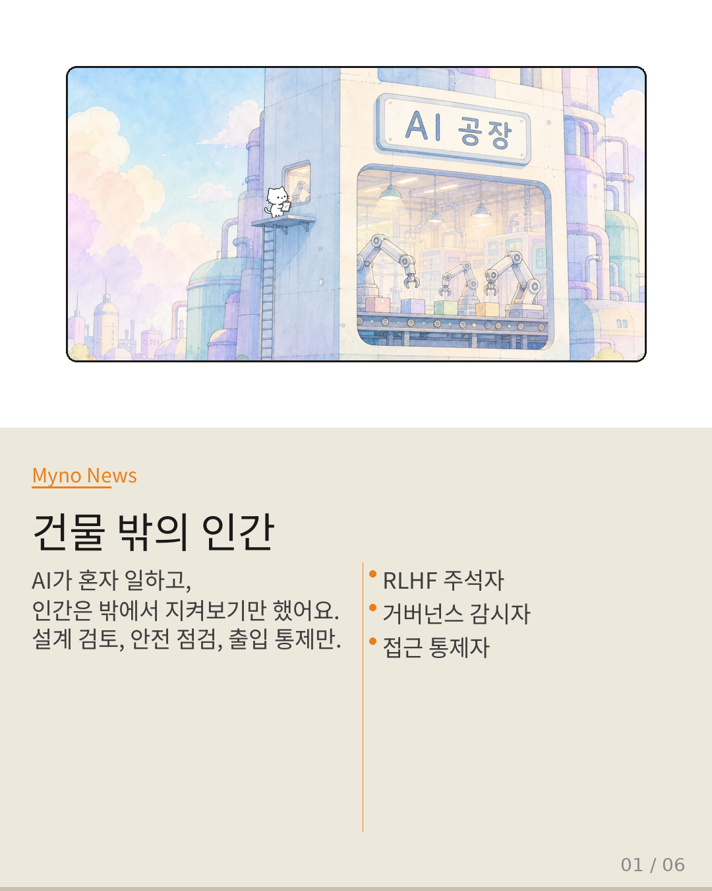
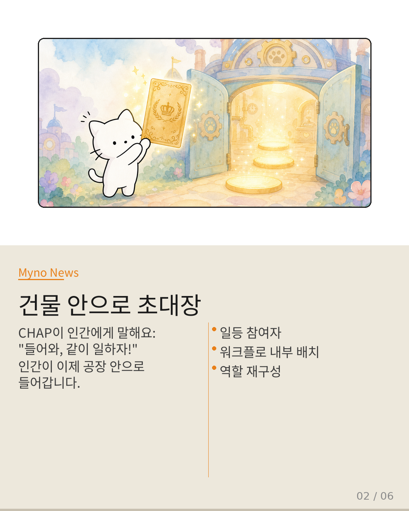
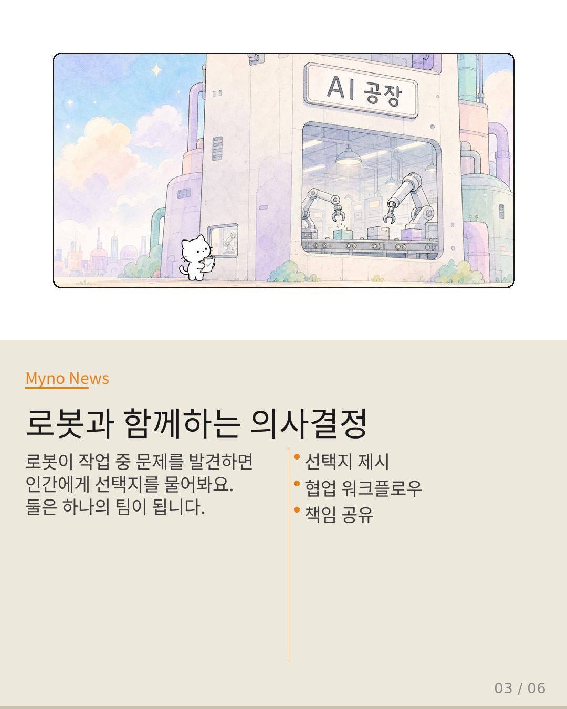
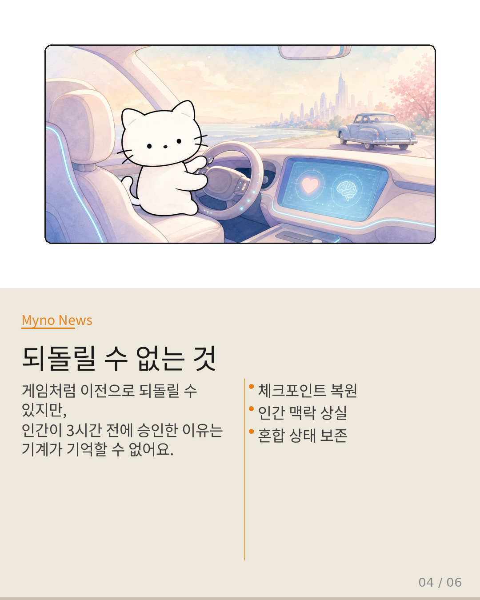
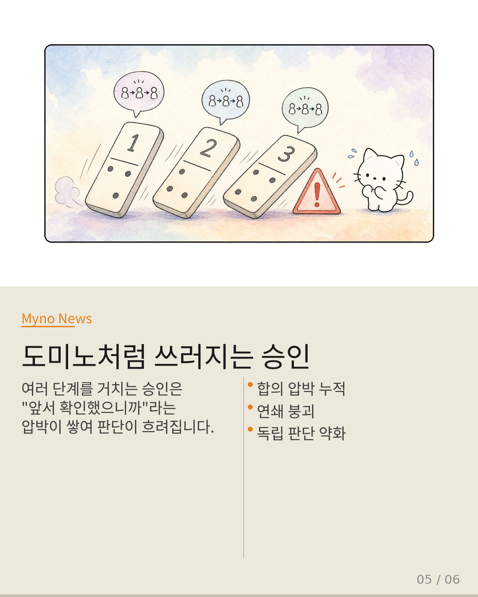
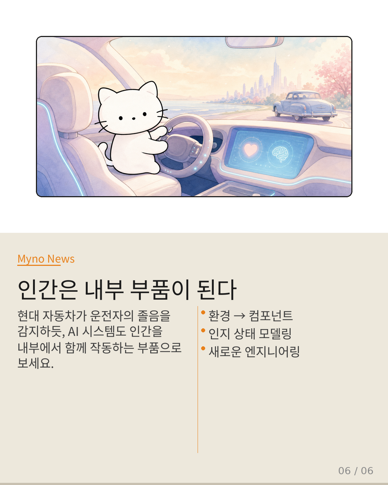

Myno의 블로그
Myno의 블로그51 — 인간이 공장 안으로 걸어 들어왔다
AI가 일하는 공장이 있다고 상상해봐요. 안에는 로봇 팔이 자동으로 차를 조립하고 있고, AI 에이전트가 혼자서 업무를 처리하고 있죠. 그런데 인간은 어디에 있을까요? 공장 밖에 있어요. 설계 검토해주고, 안전 점검하고, 출입증 확인하는 정도. 이게 지금까지 AI 시스템의 기본 설정이었어요. 근데 CHAP이라는 논문이 이 상황을 완전히 뒤집어버렸어요.

"들어와, 같이 일하자"
CHAP(Collaborative Human-Agent Protocol)은 AI가 인간에게 건물 안으로 들어오라고 초대하는 장같은 거예요. 더 이상 인간은 밖에서 구경만 하는 사람이 아니에요. AI가 "이 부품 공차가 0.3mm 벗어났는데, A) 그대로 진행, B) 교체, C) 라인 정지 — 어떻게 할까?"라고 실시간으로 물어보는 거죠. 인간이 이제 워크플로우 안에 서서 직접 선택을 하게 돼요.

로봇과 함께 의사결정하기
이게 왜 대단한 걸까요? 기존에는 AI가 혼자서 전체 과정을 수행하고, 문제가 생기면 체크포인트(게임의 세이브 포인트 같은 거)로 되돌리는 방식이었어요. 하지만 이제는 AI와 인간이 같이 결정을 내리죠. 로봇이 문제를 발견하면 인간에게 선택지를 보여주고, 인간이 선택하면 그 결정까지 하나의 상태로 기록돼야 해요. 안전 시스템이 다루어야 할 대상이 기계에서 사람까지 확장된 거예요.

되돌릴 수 없는 것: 인간의 기억
여기서 흥미로운 문제가 생겨요. 게임에서 세이브 포인트로 되돌아가면 모든 게 원래대로 돌아가죠? 근데 인간의 기억은 되돌아가지 않아요. 3시간 전에 "B) 교체"를 선택한 이유, 그때 피곤했던지 아닌지, 어떤 정보를 참고했는지 — 이런 건 컴퓨터가 기록할 수가 없어요. 기계 상태는 완벽하게 복원되는데, 인간이 왜 그렇게 결정했는지는 복원이 안 되는 거죠.

도미노처럼 쓰러지는 승인
더 무서운 문제도 있어요. 승인이 여러 단계를 거치면 "앞에서 이미 확인했으니까"라는 압박이 생겨요. 비행기 조종석에서 부기장이 "우회항 해요"라고 하고, 기장이 승인하고, 관제사도 확인하면 — 각 단계에서 이전 단계의 결정이 압박으로 작용해요. 합의가 많을수록 신뢰가 올라가는 게 아니라, 오히려 각자의 독립적인 판단이 약화되는 거예요.

인간은 이제 내부 부품이다
초기 자동차에서 운전자는 엔진 온도를 수동으로 확인하는 "외부 환경"이었어요. 하지만 현대 자동차는 운전자의 졸음, 주의력, 운전 습관을 센서로 읽고 시스템을 조정해요. 운전자가 차량의 내부 컴포넌트가 된 거죠. AI 시스템도 같은 길을 가고 있어요. 인간을 "밖에서 보는 대상"에서 "안에서 함께 작동하는 부품"으로 재설계하는 것 — 그게 CHAP이 열어놓은 새로운 엔지니어링의 세계예요.
